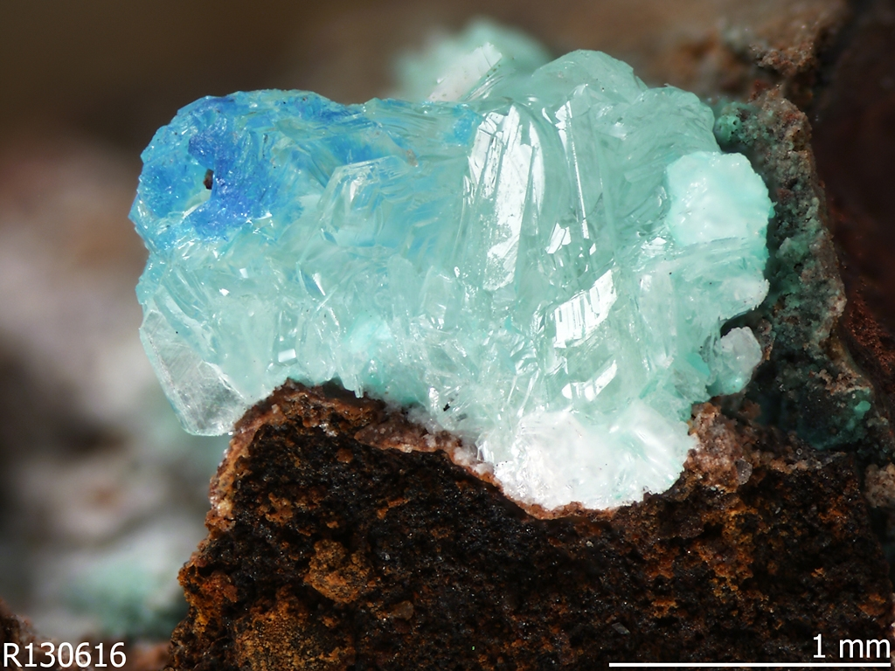

Thing-power
It is this intrinsic vitality of matter that Jane Benett puts also the emphasis on in her researches1.
The tale hazards an account of materiality. even though it is both too alien and too close to see clearly and even though linguistic means prove inadequate to the task.
We perceive the world as much as our physical and mental constraints allow us without realising the power residing in the inanimate, and rocks are a good exemple of this forgotten side of the spectrum of life.
In this sense, rocks are not so different from their « beings » counterparts in the way that they evolve and display their own particular brand of intelligence; the one to adapt and overcome the conditions in which they reside, proving a certain kind of agency over their surroundings.
Benett then encourages the reader to not read the object (matter, the seemingly inert) as an « object », but rather as the actant, a thing-power capable of realising its own design, in the same way that humans are a kind of thing-power.
it is easy to acknowledge that humans are composed ofvarious material parts (the minerality of our bones, or the metal of our blood, or the electricity of our neurons). But it is more challenging to conceive these materials as lively and self-organizing rather than as passive or mechanical means under the direction of something nonmaterial, that is, an active soul or mind.
Our reflexive habilities are for sure one of a kind, but they keep us from realising the potentiality behind the Otherness and recognise it as a “vibrant” whole that is at the same time self-sufficient, but also part of us, but also that we’re ourselves a part of.
Manuel de Landa describes this shift with brilliance in his book A Thousand Years of Non-Linear History4:
In the organic world, for instance, soft tissues (gels and aerosols, muscle and nerve) reigned supreme until 500 million years ago. At that point, some of the conglomerations of fleshy matter-energy that made up life under-went a sudden mineralization, and a new material for constructing living creatures emerged: bone.
It is almost as if the mineral world that had served as a substratum for the emergence of biological creatures was reasserting itself, confirming that geology, far from having been left behind as a primitive stage of the earth’s evolution, fully coexisted with the soft, gelatinous newcomers.